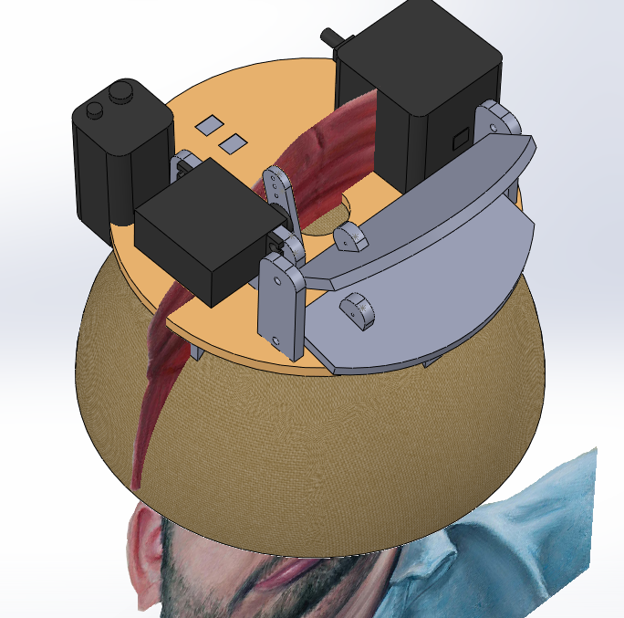
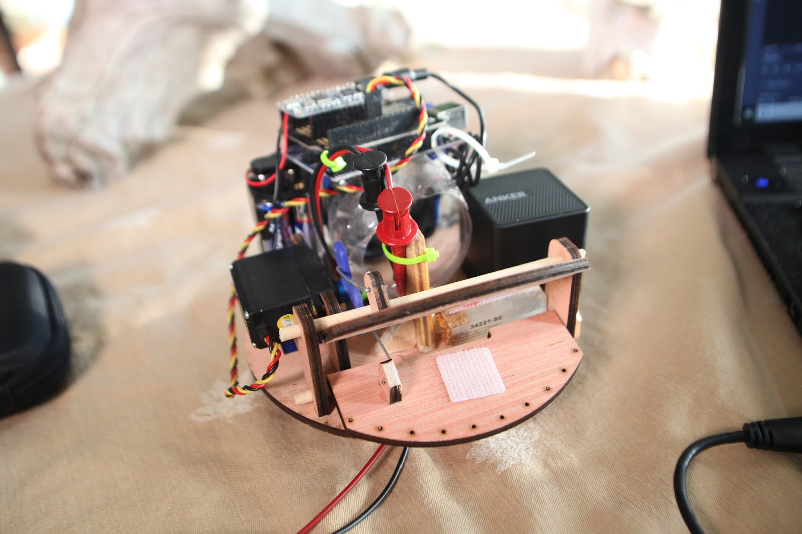
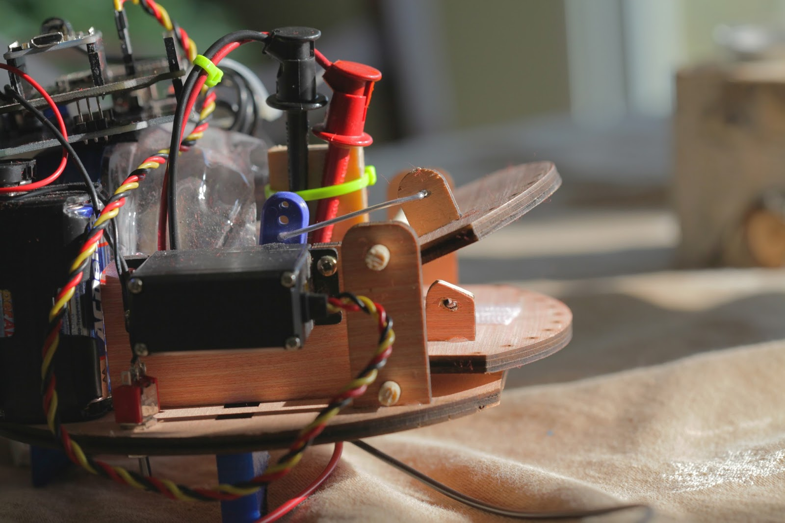
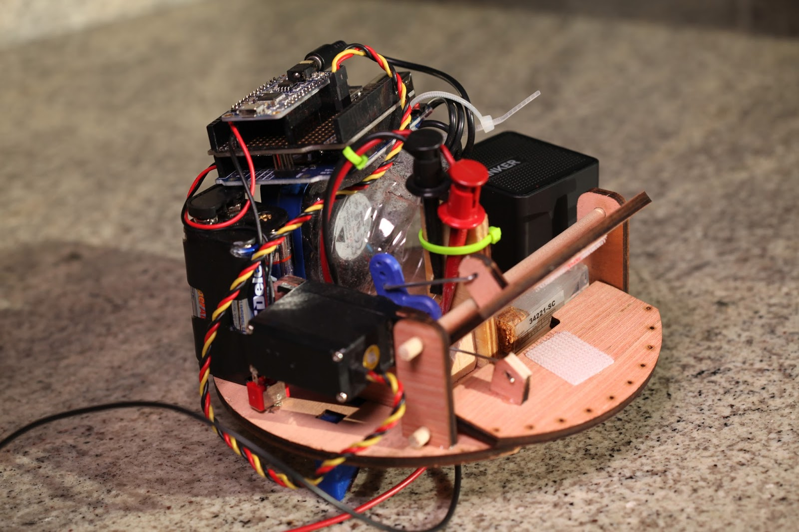
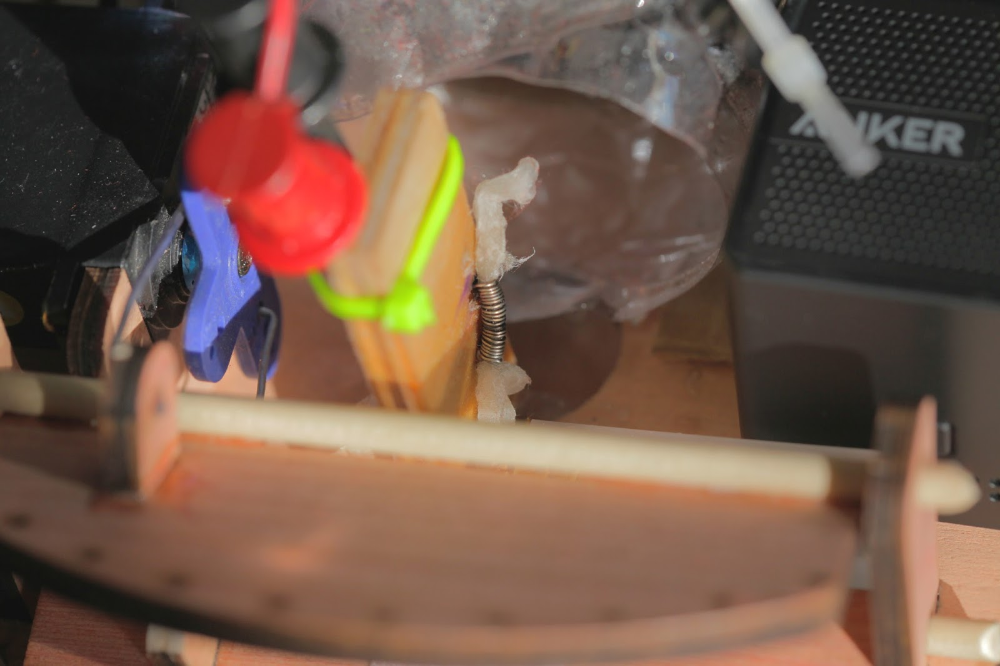
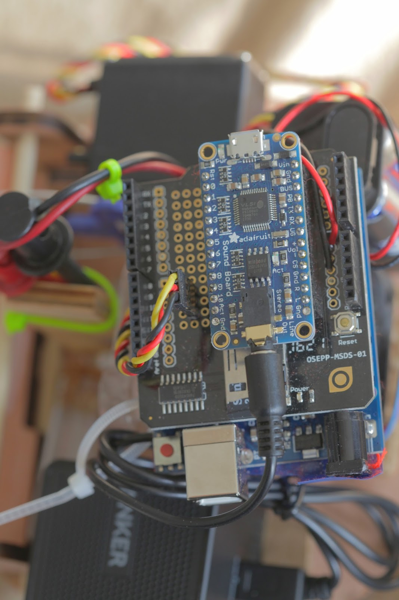
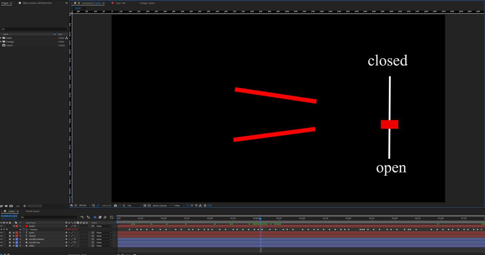
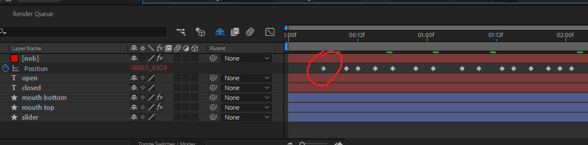
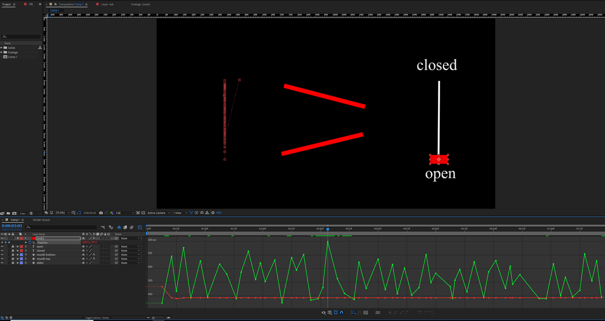
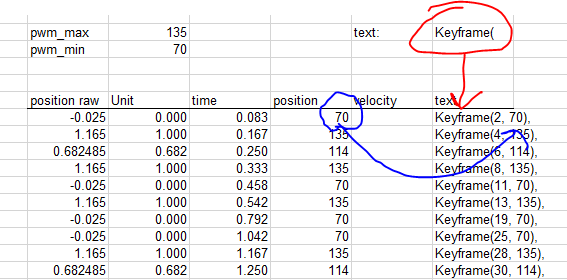

{kind=link}
What?
Yours-truly (me) made an animatronic beanie as an unsolicited gift for Ethan and Hila Klein of h3h3. It smokes. It talks. And it coughs.
Animations were generated in Adobe After effects by cameramanjohn.
Also, my house burned down in the middle of this project. No joke.
DOWNLOADS
Animations were generated in Adobe After effects by cameramanjohn.
Also, my house burned down in the middle of this project. No joke.
DOWNLOADS
Why?
Well, you see... recently we (me and cameramanjohn and sometimes but usually not caretaker chelsea) started a YouTube series called They Didn't Ask For It But We Made It And Sent It To Them Anyways: TDAFIBWMIASITTA.
What? That doesn't explain anything? Wellll uhhhhhh.. The audience asked for a coughing beanie.
Also, I've been wanting to program a dynamic animatronic controller.
| thanks BenK |
{kind=link}
Video
All the stuff used to build this beanie:
- Arduino Uno
- Adafruit SFX board (16MB)
- Bluetooth speaker with 3.5mm jack
- Hobby servo
- Nichrome wire
- Cotton Ball
- Vegetable glycerin
Mechanics
I create most everything in CAD before building it in real life, and sometimes it's incredibly helpful to bring a reference image in.
Even if it's a painting.
Above is an early layout trying to figure how much room was in the beanie. I decided to make both halves of the mouth move, not exactly sure why... but it felt right. A single hobby servo with a two sided horn actuates both halves at the same time. The black box on the top right is a bluetooth speaker with 3.5mm input.
This post is more about the firmware, so let's jump to final build. Also, this was the last thing RetinaSmelter9000 ever cut :'(
Velcro tape was stuck inside of the mouth and the other half sewn to the beanie to keep the fabric locked to the mechanics.
The two-sided servo horn is linked to the mouth flaps with pieces of paperclip.
The most ghetto portion of this project is the pair of $13 red/black test leads to deliver ~40 watts of power to the nichrome coil.
Or wait.. Maybe it's the top portion of a cut water bottle shoved over a computer fan to direct air over the smoke generator.
W/e
| Ethan reference image |
{kind=link}
|  |
| CAD with reference image |
{kind=link}
This post is more about the firmware, so let's jump to final build. Also, this was the last thing RetinaSmelter9000 ever cut :'(
|  |
| Finished robot |
{kind=link}
|  |
| Paperclip linkages |
{kind=link}
|  |
|
Smoke coil wires |
{kind=link}
Or wait.. Maybe it's the top portion of a cut water bottle shoved over a computer fan to direct air over the smoke generator.
W/e
|  |
| Nichrome smoke coil and waterbottle |
{kind=link}
Generating smoke was pretty easy: coil up a couple ohms of nichrome wire by wrapping it around a screwdriver. Pull a cotton ball through the coil. Soak it with vegetable glycerin. Dump lots of power through the coil. It's almost identical to an e-cig/vap except mooooaar power.
A proto-shield holds the Adafruit SFX board which can hold up to 16MB of audio. It behaves like a USB flash drive when you plug it into your computer.
Now accessing the desired position within a sequence is easy; just specify the sequence, motor, and time:
|  |
| Electronics |
{kind=link}
Animation
In the good 'ol days of animation each frame of was hand drawn. If a 24fps animation ran for one minute, it required 1440 hand drawn frames!! To save time and probably money, high level animators drew 'keyframes' which indicate the beginning/end and velocity/acceleration of a motion. The frames in-between were drawn by different (maybe cheaper) artists to complete the movement. For example moving a character's arm over the course of 6 frames requires two keyframes and 4 in-between frames.
| stolen graphic showing frames 1 and 6 are keyframes |
{kind=link}
Today computers can't exactly create hand drawn in-between frames, but they can easily move objects between two keyrames. Specifically Adobe After Effects was used to create the animations. I created a rig in After Effects that allowed cameramanjohn to visualize the mouth while animating.
The mouth position can be animated by adding new keyframes (red circle).
In graphical mode, you can see how the computer linear interpolates the mouth position between keyframes.
After effects does allow for non-linear interpolation to create smooth movements, but my Arduino firmware only supports linear interpolation...
|  |
| Mouth rig in After Effects |
{kind=link}
|  |
| Keyframe closeup |
{kind=link}
|  |
| Graph view |
{kind=link}
These keyframes were copy/pasted from After Effects into Excel, where I converted them to the desired servo positions, and outputted text that could easily be copied and pasted into the Arduino code.
{kind=link}
Here's a 'dirty' trick I'm proud of... We need to create an array of keyframes in our Arduino code, but I don't want to hand type this:
This setup allowed us to rapidly create and visualize the animations on a computer before ever driving real hardware.
Keyframe mouth_VapeNaysh[] = {
Keyframe(1, 70),
Keyframe(3, 135),
Keyframe(4, 135),
Keyframe(10, 70),
Keyframe(12, 88),
Keyframe(14, 135),
Keyframe(19, 70),
Keyframe(22, 126),
Keyframe(24, 135),
Keyframe(25, 126),
Keyframe(37, 135),
Keyframe(41, 70)
};
Especially if we need to tweak the animation a little it'd mean retyping everything. In Excel you can add multiple text stings together, so I did to create an array that's easy to copy/paste into the Arduino IDE:|  |
| Copy/paste keyframe text |
{kind=link}
Code
Wooooo code!!! My favorite part of the project. All the firmware was written in the Arduino IDE (code download up top).
The basic idea is you start with a single keyframe.
Then a list of keyframes makes an animation.
And then a list of animations forms a sequence (like multiple motors/lights running at the same time)
I've given up on trying making code look good with Blogger so here's some non-color-coded code..
The basic idea is you start with a single keyframe.
Then a list of keyframes makes an animation.
And then a list of animations forms a sequence (like multiple motors/lights running at the same time)
I've given up on trying making code look good with Blogger so here's some non-color-coded code..
class Keyframe {
public:
uint8_t value = 0;
uint8_t frame = 0;
Keyframe(uint8_t, uint8_t); //Keyframe(frame number, value)
float getTime(float);
void print();
};
This 'Keyframe' class lets you create objects holding both a time and value. We can make a list of many keyframe instances to form an animation.class Animation {
Keyframe *keyframe_list;
int16_t num_keyframes = 0;
float total_time = 0.0;
uint8_t audio_file = 0;
float fps = 24.0;
public:
Animation(Keyframe*, uint16_t); //Animation(keyframes, number of keyframes)
void print();
float getPosition(float);
private:
float interpolate(float, float, float, float, float);
};
Think of the 'Animation' class as one layer in an animation. It stores all associated information like total animation time and number of keyframes for a single motor. A list of animations creates a sequence.class Sequence {
public:
Animation *layer;
uint8_t num_animations = 0;
float total_time = 0.0;
uint8_t track = 0;
//byte fps = 24;
Sequence(Animation*, float, uint8_t); //Sequence(animations, length in seconds, audio file)
};
The 'Sequence' class lets you contains all the animations for different axis. This allows you to build more complicated animatronics that require multiple motors and lights. This class also stores the associated audio file number for the Adafruit SFX board.Making an Animation
The beanie project doesn't animate multiple motors, but the code is capable of it. This example shows how to animate TWO servos. Here's the array of keyframes the servos need to follow:
Keyframe animation_hello_motor1[] = {
Keyframe(1, 70),
Keyframe(5, 135),
Keyframe(10, 135),
Keyframe(12, 70)
};
Keyframe animation_hello_motor2[] = {
Keyframe(0, 80),
Keyframe(2, 90),
Keyframe(10, 135),
Keyframe(15, 80),
Keyframe(16, 90)
};
Then you create an array of animations pointing to these keyframes and their length. You could hand-type the length as 4 and 5 for each, but I made a macro "array_length()" which does it automatically.Animation sequence_hello[] = {
Animation(animation_hello_motor1, array_length(animation_hello_motor1) ),
Animation(animation_hello_motor2, array_length(animation_hello_motor2) )
};
Now you can create a single sequence, or array of sequences if you want to make different animations. You need to provide the sequence length (6.0 seconds in this case) and the Adafruit SFX board audio file number associated with the animation sequence (3 in this case).Sequence Sequence_list[] = {
Sequence(sequence_hello, 6.0, 3)
};
Here is what the sequence list looks for the beanie:Sequence beanie_animation[] = {
Sequence(sequence_WhatIsThisCough, 6.0 + EXTRA_DELAY, 3),
Sequence(sequence_VapeNaysh, 3.0 + EXTRA_DELAY, 2),
Sequence(sequence_SoManyCreeps, 4.0 + EXTRA_DELAY, 15),
Sequence(sequence_MakeMillions, 6.0 + EXTRA_DELAY, 14),
Sequence(sequence_GoneSexual, 4.0 + EXTRA_DELAY, 13),
Sequence(sequence_Cough01, 3.0 + EXTRA_DELAY, 7),
Sequence(sequence_Cough02, 4.0 + EXTRA_DELAY, 8),
Sequence(sequence_Cough03, 3.0 + EXTRA_DELAY, 9),
Sequence(sequence_Cough04, 3.0 + EXTRA_DELAY, 10),
Sequence(sequence_Cough05, 6.0 + EXTRA_DELAY, 11),
Sequence(sequence_Cough06, 6.0 + EXTRA_DELAY, 12),
Sequence(sequence_ComeOnDog, 3.0 + EXTRA_DELAY, 6),
Sequence(sequence_ChubNTuck, 6.0 + EXTRA_DELAY, 5),
Sequence(sequence_AlrightCough, 6.0 + EXTRA_DELAY, 4)
};
EXTRA_DELAY allows you to add more dead time between animations.Now accessing the desired position within a sequence is easy; just specify the sequence, motor, and time:
servo_position = beanie_animation[active_sequence].layer[motor].getPosition(animation_time);
mouthServo.write(servo_position);
Code Overview
Long story short, the program updates the animation 24 times per second. Each time it updates, the current time is sent to the sequence which figures out where it is in the list of keyframes and returns the desired position. If the current time is:- before the first keyframe - output is the value of the first keyframe
- after the last keyframe - the output is the value of the last keyframe
- in-between two keyframes - linear interpolation between the two keyframes
Conclusion
Watch the video up top if you want to see the final product working.
I'm not sure if this blog post made any sense since the code is not complete whatsoever and still kinda messy. You need to join the animation output to whatever you actually want to control (servos/lights), so you need to request current values for every motor of the animation like this mentioned above:
I'm not sure if this blog post made any sense since the code is not complete whatsoever and still kinda messy. You need to join the animation output to whatever you actually want to control (servos/lights), so you need to request current values for every motor of the animation like this mentioned above:
servo_position = beanie_animation[active_sequence].layer[0].getPosition(animation_time);
mouthServo.write(servo_position);
I was intending on controlling the smoke generation and cpu fan by creating multi-animation sequences but never did. Part of the problem is these are pretty much ON-OFF functions which are annoying to create keyframes for: you need to make 4 keyframes to transition the output from low to high, hold high, and back low. Not sure if that makes any sense, but it works literally the same way in After Effects.
The End
Sorry if this was confusing.
I definitely plan on using this firmware in the future.
I definitely plan on using this firmware in the future.
byeeeee
This is AWESOME!
ReplyDeleteWhere did you get a beanie long enough to fit all of this in?
ReplyDeleteCan you post build instructions for the automatic chopsticks?
ReplyDeleteplease I also need to know where to get a beanie that long
ReplyDelete